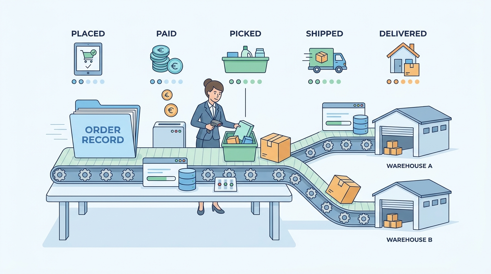

Part III — ORDER: Cart, Checkout, Payment and the Order Record
The Order Record: Lifecycle, State and the Order Management System
AI-assisted: researched and written with Claude Code, images generated with the Gemini API. How this works

Part III — ORDER: Cart, Checkout, Payment and the Order Record
AI-assisted: researched and written with Claude Code, images generated with the Gemini API. How this works
